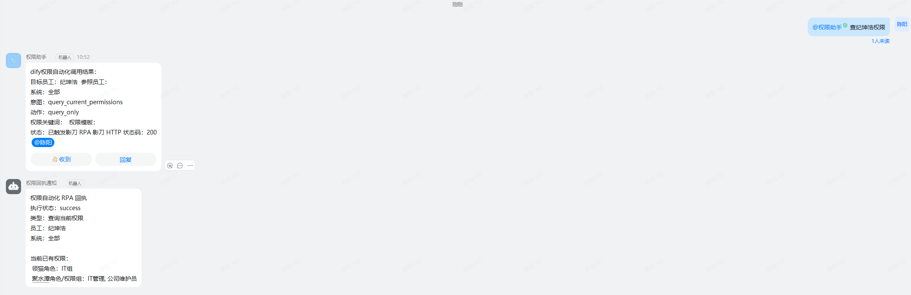
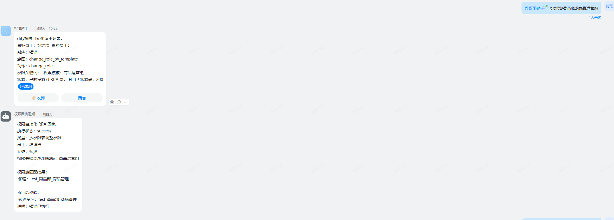
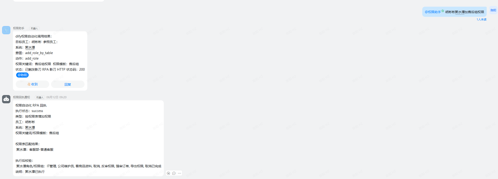
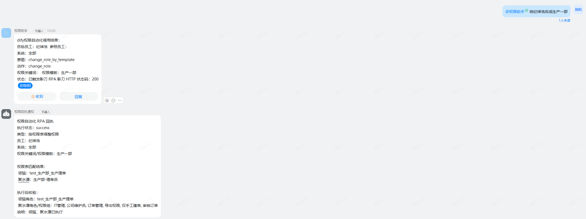
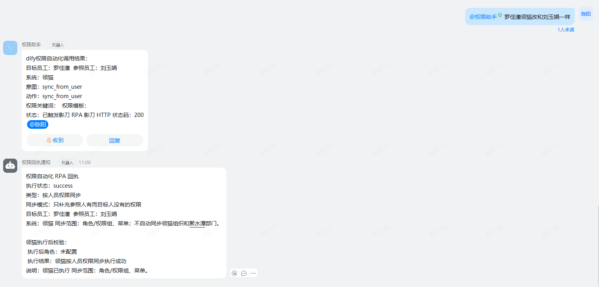
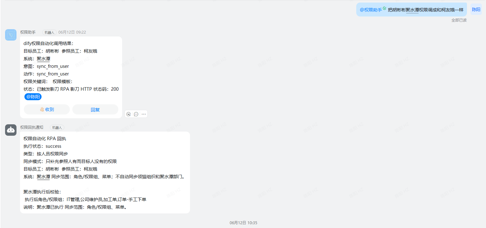
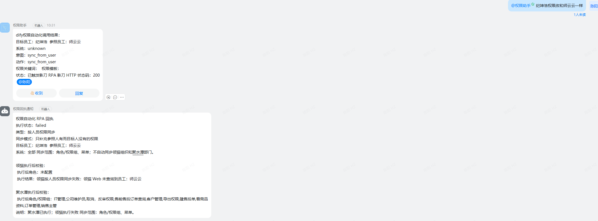

01 Usage Cases
权限自动化项目使用说明
1. 项目背景
公司内部存在员工权限查询、权限新增、部门权限调整和参考其他员工复制权限等需求。自动化改造前，运维人员需要理解请求、查询员工与权限表、登录领猫和聚水潭、手工配置并反馈结果。
2. 按权限对照表修改
用户在钉钉群中通过 @权限助手 发起自然语言请求，系统根据部门与权限角色映射完成查询或修改。
2.1 查询用户当前权限

2.2 修改领猫指定权限组

2.3 修改聚水潭指定权限组

2.4 同时修改领猫和聚水潭

3. 按参考员工同步权限
指定参考员工和目标员工后，可选择同步领猫、聚水潭或两个系统。流程会先查询双方权限，再调用对应同步模块。
3.1 参考员工同步领猫

3.2 参考员工同步聚水潭

3.3 同步领猫和聚水潭
